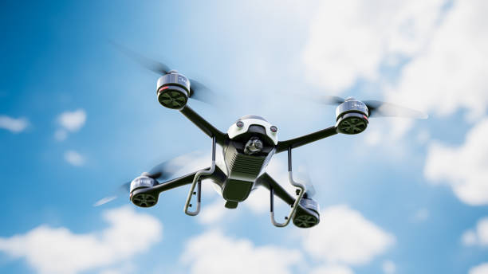

Drones: The Next Frontier of Smart Business

Introduction: The Sky Is the New Workspace
From inspecting power lines to mapping farmland, drones are reshaping how modern businesses operate. What once took hours of manual effort and high risk can now be achieved within minutes — accurately, safely, and efficiently.
At Vaayuu Robotics, this transformation is known as Drone as a Solution, a data-driven approach that converts aerial intelligence into actionable business insights.
Why Businesses Are Turning to Drone-Powered Solutions
1. Data Is the New Oil — and Drones Are the Wells
Drones capture real-time, high-resolution visuals, thermal images, and 3D models that traditional surveys cannot match, enabling faster and smarter decision-making.
2. Reducing Risks, Not Just Costs
Drone-based inspections eliminate human exposure in hazardous environments such as solar plants and large infrastructure sites, improving safety and efficiency.
3. Faster Decisions, Smarter Businesses
With real-time dashboards and AI insights, potential issues are detected early, preventing costly failures.
Drone as a Service (DaaS): The Future
- Automated mission planning
- AI-powered data analytics
- Secure cloud dashboards
- Compliance and pilot training
Industries Transformed
- Infrastructure & Energy
- Agriculture & Environment
- Construction & Real Estate
- Security & Surveillance